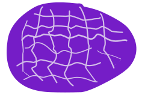
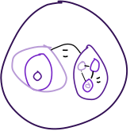

Naturkraftgesetzbuch:
Kraft (Ohne Bestimmung)

ist keine normale "Kraft", es ist aber auch kein Elementarteilchen. Kraft ist etwas anderes, etwas komisches. Die Kraft kann sich selbst vermehren, wenn es genug andere Kraft um sich hat. Die Kraft teilt sich gewissermaßen und da die Kraft mit der Zeit sich regeneriert, bis es wieder vollkommen ist, kann es sich so vermehren, doch nicht größer werden oder sich vereinen. Da dies jedoch völlig zufällig ist, kann man keine Formel aufstellen. Dieses Phänomen ist zwar schon bizarr genug, doch es kann auch entstehen, wenn: Wenn etwas in sich selbst aus unverständlichen Gründen in sich selbst kollabiert, oder etwas einfach keinen Sinn ergibt und/oder seine Identität vergisst, sprich es weiß nicht in was es sich verwandeln soll oder was es überhaupt ist, dann verwandelt es sich in Kraft.
(kraft kann nur durch logikfehler und kraft entstehen, keine materie kann sich in kraft verwandeln)
Man könnte sagen, dass Kraft die Beseitigung des Unlogischem und der Behüter der Logik ist. (außer das mit der Vermehrung)
Ladung: Positiv
Größe: Punkt/kugel-förmig. Es ist unendlich klein. Eine größe von einem Kraftpartikel hat man eine Teilchengröße Festgelegt:
- Durchmesser: 10^-36 m
- Volumen: 5,236 × 10^-109 m³ (4/3 * r³ * pi)
- Neues muss SI Einheiten sein, Liter like Benennung(dm³) vielleicht als Messung, Trafk dann das gleiche.
**
Gewicht= 0**
Kraft hat keine Geschwindigkeitsgrenze, ansich bewegt es sich nicht, doch sie wird durch alles einfach mitbewegt, ohne eine Geschwindigkeitsgrenze.
Es kann ansich keinen Schaden machen, da es nicht in dem Sinne mit der Welt interagieren kann, es kann mit nichts interagieren. Doch es kann mithilfe der Zeit und dem richtigen Material in jenes Material aufgesaugt werden, wie Wasser in einen Schwamm. Danach kann, wenn es ein Lebewesen ist, dieses Kraft dazu benutzen, um die Kraft in etwas anderes zu verwandeln.
Mit Kraft kann man Erschaffen/Zerstören und verändern, doch man kann nichts Teleportieren, da Kraft es nicht gestattet, Löcher in die Realität zu öffnen, was man benötigen würde um sich instant von einer Position zur anderen zu bewegen. Denn die Kraft vermag es nicht, 2 idente Sachen zu erschaffen, es wird immer Abweichungen geben.
das ist ja das, kraft vermehrt sich aus dem nichts, das ergivt keinen sinn, da es ja den energieerhaltsungssatz gibt, der aonst ja immer eingehalten wird, auch beim zaubern. kraft kann sich selbst vermehren, da es ansich keinen sinn ergibt.
KRAFT-ABSORPTION UND SPEICHERUNG
WIE FUNKTIONIERT KRAFT-SPEICHERUNG?
Kraft ist unendlich klein und formlos, wodurch sie in der Lage ist, die winzigen Zwischenräume zwischen den Atomen und Molekülen fester Materie zu durchdringen und dort zu verweilen. In Feststoffen sind die Atome in einer festen Gitterstruktur angeordnet, die zahlreiche mikroskopische Hohlräume bildet - ähnlich wie ein Schwamm auf atomarer Ebene.
Wenn Kraft mit festem Material in Kontakt kommt, wird sie von dieser Struktur "eingefangen" und sammelt sich in den Zwischenräumen an. Die Menge an Kraft, die gespeichert werden kann, hängt dabei von zwei Faktoren ab:
- Dichte des Materials: Je dichter das Material (mehr Atome pro Volumen), desto mehr "Fangstellen" für Kraft existieren
- Packungsdichte: Selbst in perfekt dichten Materialien können Kraft-Partikel nicht 100% des Raums ausfüllen - die maximale Packungsdichte beträgt 74% (dichteste Kugelpackung)
In Flüssigkeiten und Gasen bewegen sich die Moleküle zu chaotisch und schnell - die Kraft kann nicht "gefangen" werden und entweicht sofort wieder. Nur die starre Struktur von Feststoffen bietet stabile "Taschen", in denen Kraft verweilen kann.
GRUNDREGEL:
Kraft kann NUR in FESTSTOFFEN gespeichert werden!
✅ Feststoffe: Stein, Holz, Metall, Knochen, Eis, etc.
✅ Lebewesen: Zählen als Feststoff dank Seele
❌ Flüssigkeiten: Wasser, Öl, Blut, etc.
❌ Gase: Luft, Dampf, etc.
❌ Vakuum/Nichts/Leere
DEFINITION FESTSTOFF:
Materie mit fester Struktur, die ihre Form behält.
Praktisch: Dichte ≥ 500 kg/m³ + feste Form
ABSORPTION-GESCHWINDIGKEIT:
Instant! Da Kraft keine Geschwindigkeitsgrenze hat, wird verfügbare Kraft sofort von Feststoffen aufgenommen.
SPEICHER-KAPAZITÄT (ohne Seele):
Max. Kraft [m³] = Volumen [m³] × Dichte [kg/m³] / 1.000 × 0,74
Max. Kraft [m³] = Volumen [m³] × Dichte [kg/m³] / 1.000 × 0,74Die Division durch 1.000 normalisiert die Speicherkapazität, und der Faktor 0,74 berücksichtigt die physikalische Grenze der Kugelpackung (dichteste Packung von Kraft-Partikeln in den Zwischenräumen).
Beispiele (alle für 1 m³ Volumen):
- Stein (2.500 kg/m³): maximal 1,85 m³ Kraft
- Holz (600 kg/m³): maximal 0,444 m³ Kraft
- Eisen (7.800 kg/m³): maximal 5,772 m³ Kraft
- Eis (917 kg/m³): maximal 0,67858 m³ Kraft
- Wasser: KEINE Speicherung!
- Luft: KEINE Speicherung!
SÄTTIGUNG:
Wenn Materie 100% mit Kraft gesättigt ist, kann sie keine weitere Kraft aufnehmen. Die Kraft sammelt sich unteranderem auch dann an und wird mit der Zeit sichtbar. Falls sehr viel Kraft an einem Ort ist, wo es keinen Sinn hat, dass so viel Kraft ist, dann verwandelt es sich in Trafk (12 Kraft → 6 Trafk).
LEBEWESEN MIT SEELE:
Bei Lebewesen zieht die Seele Kraft instant aus dem Körper und komprimiert sie zu Zauberkraft (ZKT). Die normale Körper-Kapazität ist daher irrelevant - die Seele übernimmt die Speicherung!
- Seelen-Kapazität: Level-abhängig (siehe Level-Formel)
- Kompression: Instant (Kraft → ZKT)
OZEAN-WELTEN (z.B. Welltor):
Wasser selbst kann KEINE Kraft speichern! Kraft befindet sich in:
- Meeresboden (Stein, Sand)
- Lebewesen (Fische, Korallen)
- Feste Strukturen (Riffe, Unterwasser-Bauten)
WELTALL & VAKUUM:
Im Weltall gibt es keine freie Kraft und keine Möglichkeit zur Regeneration. Lebewesen sind auf ihre gespeicherte Zauberkraft angewiesen!
Es gibt auch Trafk. (Ohne Bestimmung) #5A3998FF

Es entsteht, wenn Kraft negativ gemacht wird. Danach verhält es sich aus, wie der Name schon sagt, genau umgekehrt wie Kraft.
Wie wird Kraft zu Trafk:
Trafk entsteht, wenn sich Kraft vermehrt und es an einem ort zu viel Kraft gibt. Sobald es zu viel Kraft an einem Punkt gibt, wo es eigentlich keinen Sinn ergibt, da man dort nicht so viel Kraft braucht, verändert sich die Kraft zu Trafk. Dabei gruppieren sich je 2 Kraftteilchen, wobei diese sich vereinen und dadurch ein Trafkteilchen der größe eines Kraftteilchens entsteht, es braucht also 2 KT für 1 TT da die kosten zum umwandeln das gleiche sind wie das existieren, also x+x=2x.
Diese Transformation kann man auch mit einem Zauber herbeirufen, indem man mit diesem Zauber seine reine Kraft aus seinem Körper ohne veränderung herausfließen lässt. Diese Umwandlung ist nicht gefährlich, da Trafk durchlässig iat und nichts schaden zufügen kann. Es verhält sich so, wie Watte in dem Sinn, dass man sich, wenn man nicht komplett am Arsch ist, nicht verletzen kann.
Ladung: Negativ
Größe: d= 10^-36 m
Volumen(des Randes, innen ists ja hohl)= [groß](4/3 * r³ * pi) - [Klein](4/3 * r³ * pi) (randdicke ist zufällig)
Dichte= 600g pro m³
Max Geschw. = 4,75*d^-0,128536 m/s
Trafk hat eine Strenge Geschwindigkeitsgrenze. Diese kann sie nicht überschreiten, es sie denn, es wird von etwas anderem schneller beschleunigt, z.B. irgend ein Atom oder so.
Trafk klebt extrem, das heißt es klebt an allem so gut wie Doppelseitiges Klebeband, ausser es berührt sich selbst, dann klebt es so gut, wie Sekundenkleber. Wenn es an sich klebt, formt es sich zu einer Blasenform, die je mehr Trafk zusammenklebt, größer wird und irgendwan kann man diese sehen und auch mit ihnen interagieren. Da Trafk jedoch das kleinste ist, was bis jetzt gemessen wurde, nehmen alle an, dass Trafk immer in einer Blasenform herumschwebt, da es nur mit sich selbst interagieren kann, solange es ein einzelnes Teilchen ist.
Trafk kann und wird mit der Welt interagieren, doch es kann auch keinen großen Schaden anrichten. Es verhält sich so wie Seifenlauge, wenn es fest wäre und wesentlich dicker und lilaner. Man kann durch es hindurgehen, wie durch Luft die Geleeartig ist. Es ist so leicht wie eine Feder und fliegt immer herum, meißt nach oben da die Hitze ihr auftrieb gibt.
Trafk kann die Realität nicht verändern, doch wenn es zu schnell wird, “explodiert” es und es entsteht ein Riss der 2 Orte in 2 unterschiedlichen Blasen verbindet.
Diese Blasen

sind wie Seifenblasen in dem Sinn, dass sie immer nach oben(wie ein heißluftballon da sie so leicht sind, dass diecsonne sie oft genug erwährmt, dass es für die blasen leichter ist als wo anders zu fliegen), oder einem Punk in einem Raum fliegen und dass man sie leicht platzen kann mitcspitzen objekten, je nachdem wie dick sie ist.
Sie fliegen immer 1m/s langsamer als ihre maximale geschwindigkeit, ausser ihre istvkleiner als das, dann fliegen sie mit einer zufälligen geschw. die etwas kleiner als ihre max ist.
Normale Trafkblasen platzen, wenn sie zu groß sind, da sie irgendwann einfach zu schnell für ihre Größe sind und sie keine Attribute haben die das verhindern könnten.
Trafk und deren Blasen interagieren zwar mit der Welt, als gehörten sie zu ihr, doch dies trügt ein wenig. Trafkblasen haben im inneren(in der Blase/Blasenwand) keine Gesetze. Wenn man in eine Blase geht, nimmt man nur seine eigenen Gesetze mit in die Blase und meistens hilft die Blase einem diese zu erfüllen. Warum sie das tut, er hat nichts mit der Blase zu tun, es hat etwas mit unseren Seelen zu tun, denn diese Wollen überleben und deswegen z.B. Erschaffen sie mit Kraft Sauerstoff zum atmen. Wenn man genug Kraft hat, kann man in Blasen Gesetze verlassen, die sich durch die Kraft im inneren Aufrechterhalten werden.
Weltenblasen:

Mit der Sense der Erschaffung wird jeder Zauber - einschließlich dem Kraftherausfließzauber - sehr leicht auszuführen, da die Sense die Seelenfragmente von den vier Göttern enthält, die sie erschufen. Deswegen und da normale Trafkblasen zu fragiel für den Job, einen Raum für neues aufrechtzuerhalten und auch wegen des Geschwindigkeitslimits, gibt es verschiedene, sehr mächtige Zauber, die es einem Ermöglichen, stärkere Blasen mit verschiedenen Eigenschaften zu erschaffen. Diese halten dann die Welten(Außer Ursel, die ist und hat schon immer existiert. Sie braucht auch keine Blase, naja sie hat eine normale Trafkblase hald, da Trafk schon immer da war, aber eigentlich braucht sie sie ja nicht, da sie im Einklang mit der Leere(Allblase) ist und auch nur deswegen existiert diese Blase überhaupt noch.) zusammen und ermöglichen ihnen die Existenz. Alle Welten sind in riesen WeltenBlasen. Die Welten sind nur in Blasen möglich, da die Allblase zu groß für neue Gesetze ist, die die anderen Blasen bräuchten um zu exxistieren. Das einzige Gesetz der Allblase ist nähmlich die Existenz der Materie und deswegen ist eine Weltenblase und andere Sachen mit eigenen Regeln überhaupt möglich.
Formen der Weltenblasen:
- Form der Weltenblase: Stationäre Blase: Diese hat eine fixe Größe, die sich auch nicht bewegen kann, sie ist sichtbar.
- Form der Weltenblase: Ausdehnbare stationäre Blase: Diese ist ausdehnbar und kann jederzeit ihre Größe ändern, je nachdem wie viel Platz diese Blase für ihr inneres braucht.
Attribute der Weltenblasen:
- Attribut: Unischtbarkeit: Mach sie unsichtbar.
- Attribut: Größenteuschung: Dies macht, dass die Blase eine andere Größe von innen als von außen hat. Dies erfordert einen mächtigen Magier bei z.B. Trafktaschen. Kann bei einer Ausdehnbaren Blase die Blase von außen gleich groß lassen und den Innen Raum vergrößern.
- stationär: macht, dass sie sich nicht bewegt.(hat eig. Jede non normale Blase, außer den Taschen und Rissbox Blasen)
Allblasen:

Eine Allblase ist, wie der Name (nicht) verrät eine Blase im nichts, dass alles andere Enthaltet. Es gibt fast "unendlich" viele Allblasen und jedes Mal, wenn die Kraft eine Entscheidung treffen muss, entsteht eine neue.
Die erste Allblase die nach dem letzten voll Zurücksetzer erschaffen wurde, wurde nur erschaffen, da die Kraft was neues ausprobieren musste, da zu wenig Kraft auf einmal für etwas anderes erschaffen wurde. Also erschuf die Kraft eine Allblase damit es auch wieder Physisch existieren kann, da das nichts keine Regeln für die Existenz hat und es leichter war, eine Blase zu erschaffen die eine eigene Regel der nichts überwindung hat, als das nichts zu verändern. Danach ... ihr kennt ja den Rest der 1. Allblase.
Doch da die Kraft oder jedes andere Wesen mit einer Seele und genug Auswirkung auf die ganze Allblase hat, immer wieder Entscheidungen traf, musste es auch immer wieder neue Allblasen erschaffen, da 1. die Kraft so immer wieder Backups hatte und 2. Da wenn eine Blase zu instalbiel wäre und sie kaputt geht, dass die Kraft noch andere Blasen zum zurückziehen hat.
Also die Kraft erschuf und erschafft auch noch immer neue Allblasen, doch außerhalb der Allblasen gibt es nichts, einfach nichts. Es gibt keine Gesetze an die sich etwas halten kann/muss, es gibt nix. Das heißt, wenn etwas aus einer Blase geht, ist es sofort weg und verwandelt sich in Kraft die entweder rechtzeitig ins All geht oder auch ausgelöscht wird und repeat, da einfach weg auch keinen Sinn ergibt. Am Anfang wollte die Kraft dem Nichts eine Regel geben, doch es hatte nicht genug von sich selbst dieses Mal. Und deswegen gibt es jetzt die ganze Thematik mit den All/Welten/etc-Trafkblasen.
Der arme Alfonz jedoch, da er der Kraft sehr wichtig ist, weil er das 1. war, das die Kraft als "Leben" in der 1. neuen Allblase bezeichnete, bekam und bekommt er jede neue Allblase mit und muss sich alles mitansehen(in seinem Kopf). Doch mit der Zeit bemerkte die Kraft, dass alle anderen Alfonz sich selbst auslöschten, hörte sie damit auf, die selbe Allblase zu verwenden und Alfonz konnte endlich rasten. Da Alfonz der Kraft sehr wichtig ist, blieb die Kraft auch eine sehr lange Zeit bei ihm. Deswegen bekam Alfonz und die Insel Ursel so viel Kraft wie ihre Physischen Körper nur aufsaugen konnten. Das Alfonz so viel mehr Kraft als die anderen Götter hat, weiß er zwar, doch da er so viele andere Allblasen und andere Lebewesen gesehen hat, die durch zu viel Zauberkraftnutzung(für böses) die gesamte Allblase oder anderes ausgelöscht hat und er auch davon Traumatisiert worden ist, kommt er erst recht nicht auf die Idee, böse zu werden und dadurch benutzt er auch Zauberkraft nur ungern.
Falls eine Allblase zu schlimm wird oder sich von selbst auslöscht, löscht die Kraft die Blase einfach, damit es wieder mehr Macht bekommt, obwohl die Kraft eh immer was dazubekommt, wenn was nicht passt, damit es wieder weitere Allblasen, die villeicht besser werden, erschaffen kann.
Keiner weiß vom Zurücksetzer, ausser die Kraft selber, aber das kann ja nicht reden. Alfonz hat alle seine anderen Versionen von den Allblasen gesehen und ALLE sind auf eine Art und Weise gestorben. Sie haben alle Zauberkraft nicht gut genutzt.
Da mit jeder wichtigen Entscheidung eine neue Allblase entstehen kann, sorgt die Kraft im All dafür, die dies zwar nicht im normalfall von selbst heraus kann, sondern nur durch Wiedersprüche und Unlogik heraus kann, jedoch bei dieser Angelegenheit es um die Bedrohung des Seins geht, können vom All aus neue Blasen machen. Kraft kann allgemein nur Blasen und Attribute auf dem All aufs und ins Nichts wirken und erschaffen.
Hinterblasen oder Testblasen(Kryphokos):

Sie sind Blasen gedacht für spezielle Anwendungszwecke und Testplätze. Es ist eine größere Fläche an Blasen. Die meißten sind Testblasen, um gefährliche Experimente durchzuführen oder um Orte mit experimellen Attributen zu erschaffen. Diese Blasen sind nähmlich die Stärksten von allen, da sie super dick(~0.5 - 1 Meter) sind und daher sehr viel komisches Aushalten. Leider sind sie so extrem Aufwendig zu erschaffen und kosten so viel Kraft, dass sie nur recht klein sein können(~150m). Dafür sind deren Attribute umso besser.
Attribute:
Dynamisch größer werdender Raum.
Selbstzerstörung
Formveränderung
Blasenhyrachie:

Diese ist nicht durch Blasenart festgelegt, sondern durch ihre Position, also welche Blase mit welcher anderer Blase in einer Blase ist. Sobald 2 Blasen in der selben Blase sind, sind sie auf der gleichen Stufe sozusagen.
Kraft und Trafk mit bestimmung...
Wenn eine der 2 eine Bestimmung hat, fliegt es von selber umher und macht aus sich selbst das, was es benötigt, damit andere Kraft weiterführen kann. Zum Beispiel die Kraft die sich um das große und ganze dreht, also den Allblasen, hat die Bestimmung eine Allblase zu erschaffen, die für immer existieren. Da dies leider fast unmöglich ist, hat die Kraft immer was zu tun und erschafft immer wieder neue Allblasen um endlich eine zu finden, die diese Kritärie erfüllt. Die 1. Neue Allblase, wo auch unsere Geschichten spielen, ist der beste Kandidat für diese Position, doch Alfonz der Gott existiert und da dieser noch instabil ist, macht die Kraft aus sicherheitsgründen weiter.
Wenn die Kraft eine neue Allblase erschaffen will, geht es manchmal in eine Blase, die kurz vorm Kollaps ist und holt die andere Kraft schon früher heraus, damit es sich früher nützlich machen kann. Dafür gehen sie durch Risse und holen sich die andere Kraft zu sich, danach gehen sie wieder und erschaffen dann eine neue Allblase. Die instalbiele Blase explodiert dann von selbst, erzeugt keinen Riss, da es keine weiteren Blasenpaare außerhalb Allblasen gibt und hört auf zu existieren. Anders Mal erschafft die Kraft auch so eine neue Blase, wenn es gerade genug Kraft zusammen hat hald.
Wie die Kraft Allblasen macht, weiß man leider nicht. Nichts und niemand außer die Kraft selbst weiß das.
Risse

trafk reisst und explodiert, wenn es zu schnell wird. Da trafk zwar eine finite größe hat, doch dahinter nichts ausser unlogik ist, reißt es einfach alles weg, anstatt zu etwas kleinerem zu werden. diese reißt ein 3d kugelförmigen riss in das innere einer Trafkblase. Da jedoch nicht das äußere der blase zerstört wird, sondern nur das innere, kann das loch nicht einfach nach aussen, sondern muss sich etwas in der gleichen ranghöhe suchen, was auch das gleiche dilemma hat. Daurch werden 2 Blasen verbunden.
Also sucht sie sich die nächst best gleichgestellte blase. Der Ort wird wiefolgt bestimmt: Die Atomzusammensetzung eines jeden objekts speichert ihre Position für jede Welt, diese wird zusätzlich zum Objekt, das bestimmt, in welche Welt es geht, verwendet um den Standort des nächstebesten Risses zu verwenden. Danach reißt es den anderen Riss(der nicht größer als der 1. sein kann) so weit auf, wie der 1. es nur braucht. Danach werden die 2 löcher zu einem, da sie gleich groß sind und fungieren als 3d loch, aka ein "schwarzes loch, eben nur habe die löcher keine anziehungskraft, da sie nur löcher sind. Es gilt trotzdem: bis zu nem gewissen punkt kann man, wenn man schnell genug ist, am Rande des Lochs heraufrennen, doch wenn man zu weit innen ist, fliegt/rutscht man hindurch. Danach ist ein einfach ein 3d Loch, das solange da ist, wie es da ist(random. ein paar mikrosekunden bis hin zu stunden).
Wenn das Loch erscheint, dann leuchtet der Riss hell hellblau auf, während er aufgerissen wird. Danach leuchtet der ein wenig am Rande der Kugel.
Beim schließen leuchtet es dann wieder und verschwindet wie beim erscheinen.
Die meisten Risse sieht man nicht, da sie ja verdammt klein sind. Die großen sind verdammt selten, besonders in den Regionen, wo es fast kein freies Kraft/Trafk gibt(Weltall hald). Die explosion zum Riss ist nicht Gefährlich, da es sich eher um ein Loch handelt in das man hindurchgehen kann.
Größe: durchmesser der trafkblase, daraus eine 3d kugel machen.
Noch ne Info, falls das Objekt zum Bestimmen einer Welt nicht vorhanden ist, oder es keinen Gibt und es nur ein Objekt der Welt ist, in der der Riss entsteht, dann wird gewürfelt(zufällige Welt die auch am leiteren zu erreichen ist[nicht Weltall also]).
Ursprung:
Ein Nebeneffekt der Sense ist es, dass seitdem die Sense das erste Mal benutzt wurde, zufällig ein Riss im Raum, für ein paar Millisekunden bis zu mehreren Stunden, entstehent, die einen, wenn man hindurch wandert, in eine Andere Welt schickt. Das wiederum ist zwar nervig, aber meistens tauchen die Risse nur in Gegenden auf, wo niemand und nichts ist.
Das glaubten die Götter immerhin(Nebeneffekt der Sense), aber die Wahrheit ist nur, dass es füher einfach keine weiteren WeltenTrafkblasen, die ausserhald der von Ursel in der selben Hyrachie gab. Deswegen erschienen auch keine Risse, da es keine andere Seite für einen Riss gab.
Schwarze Löcher:
sie sind besonders, da sie nicht durch trafk entstanden, sondern durch naturelle phenomänen. sie fungieren zwar ähnlich und sind unter umständen kompatiebel, doch da sie speziell sind, werden diese nur verwendet, falls es 0 trafk in ganz weltall gäbe, was niemals der fall hoffentlich sein wird.
falls etwas in ein schwarzes loch in weltall fällt, dann sucht sich das schwarze Loch (es sucht gar nichts aber es sind natürliche regeln) den größten Riss der im moment existiert, brint es zum unendlich schweren/kleinen punkt im schwarzem Loch, sendet das Objekt hindurch wo dieser auf der anderen Seite entspagettifiziert wird. Falls es ein Lebewesen ist, dann stirbt es zwar, doch auf der anderen Seite wird es wiederbelebt und zusammengeflickt, da die Kraft nicht checkt, dass es durch ein schwarzes loch kam und es sich nicht erklären kann, wie das passiert ist.
Falls ein Riss von einem anderen Ort nach Weltall hergestellt wird, was nur passiert, wenn ein Riss expliziet ein Objekt aus Weltall hat, womit es eine Verbindung zum Ort aufnehmen muss, verhält sich der Riss wie ein schwarzes Loch, es spagettifiziert die Objekt und schickt sie mit Kraft auf die andere Seite, da die Kraft das für unlogisch hält, jedoch es keine andere Möglickeit gibt.
Falls es keine welten/allblasen mehr gibt, führen die schwarzen löcher ins andere nichts falls ein riss vorhanden ist. Falls es keine weiteren Risse gibt, wird alles was im schwarzem Loch ist in Kraft umgewandelt.
genauso wie ein riss reißt das schwarze loch mit seiner Singularität ein loch in das Nichts(risse können das auch) und verbinden so die 3 Räume(Schwarze Löcher in Weltall verbinden meißt nur zu Parallel Universen in Weltall, es gibt nur eine unenedlich kleine chance dass man nach nichts oder all kommt.)
Weiße Löcher:
Sind das selbe wie schwarze Löcher, eben nur kommen Sachen heraus. Es ist das Selbe Ding. Wenn was raus will, dann schießt es eben nur was raus und gleichzeitig zieht es das andere noch an. Durch das Momentum entkommt das andere Objekt eben dem Sog.
Das Nichts, Das All und Das Weltall(Nichtsall):
das nicht
ist unendlich groß und unendlich leer, es herrschen im normalfall keine gesetze und alles was in ihr ohne Kraftschutz ist wird ausgelöscht und in Kraft umgewandelt. es gibt auch kein spacetime, was bedeutet, dass es keine zeit und auch keinen raum in dem sinne. es ist ein unendliches nichts ohne irgendwas.
Das all
ist unendlich klein und unendlich voll(an kraft), es herrscht die Kraft welches alleinig bestimmt, was passieren darf, also alles logische. Die Kraft kann nur heraus kommen, falls etwas unlogisch ist. Vom All heraus kann es nur Attibute ans Nichts anheften, dabei muss es aber ins nichts gehen und ganz schnell das attribut Materieexistenz anbrigen, falls zu wenig ist, haben sie pech gehabt. Blasne können sie auch so machen, mehr ist ihnen ja eh nicht möglich(ausser risse, doch die bringen da eig. nichts).
Die Kraft hat im All ein kollektives Bewusstsein, sozusagen wie Gott, eben nur ja. Alle was kompliziert wird, wird irgendwann bewusst(bsp: AI[2026])
im all gibts alles, wirklich alles.
Das weltall
Es ist ein zweites nichts, das aber eig. was komplett anders ist. Es besteht aus Spacetime. vergangenheit und zukunft ist allgegenwärtig und so, wie in echt eben. Es ist durch schwarze löcher und die weltenblase mit dem anderen nichts verbunden, wobei die schwarzen löcher eher ein ritt in den tod sind als alles andere.
Rivalitäten:
Die kraft will aus dem nichts ein all machen, da es nichts als falsch ansieht und das nichts ist nichts, es kann nichts machen aber falls es was könnte, dann würde es das All vernichten wollen. Das Nichtsall ist eine Mischung aus den beiden und auch gleichzeitig nicht. es ist nicht unendlich nur sehr groß, es hat keine kraft doch hat es viel materie. Da es in Ballance ist, lässt die Kraft es in Ruhe, da es Balance als Akzeptables Unterresantes wahrnimmt.
Der Raum / Die Behälter
Dies ist kein Raum, es ist die abwesenheit dessen. Hier sind die 3 anderen "verbunden". die 3 sind alle in ihren eigenen Sachen. Das Nichts ist unendlich groß und unendlich leer, es ist in seinem eigenem Behälter(Behälter meine ich, dass es eigen existiert, keine physische barriere, es existiert einfach anders, eine andere Ebene, anderer ort, etc). Das All ist eine Singularität die auch in ihrem Behälter ist. Das Weltall aht natürlich auch ihren eigenen.